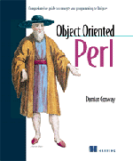

|  |
Object Oriented Perl
Manning, 1999 $34.36 512 pp. by Damian Conway |
There are a few precious books in my library that seem almost magical. A beginner can pick one up and become and expert, just by reading the book, because of the tremendous breadth and depth of the subject matter and because of the perfectly clear exposition. An expert can also pick up the book and learn something new for the same reasons. These are books that you can buy when you're just starting out in a field, and even though you pull them off the shelf every week for years and years they never seem to run dry. There aren't many of these books; Tanenbaum's Computer Networks is one. I think Damian Conway's Object Oriented Perl is another.
It may sound almost trivial, but I think the best thing about this book is the division into sections. I read a lot of prose in which the sentence breaks are in arbitrary places: the author wrote for a while, then ran out of steam and pressed the period key. Then he wrote some more and when he got tired he pressed the period key again. Eventually, he went to get a fresh cup of coffee and when he got back he started a new paragraph.
When so few authors have a grasp on something as simple as a sentence, it's really rare to find a book that is intelligently divided up into sections or chapters, and one forgets how valuable such an organization can be.
Each chapter in Object Oriented Perl is about a big idea, like persistence, overloading, encapsulation, or genericity. (Don't worry if you don't know what these things are; Chapter 1 is about jargon.) It's usually hard to understand ideas as big as these. But the organization of this book makes it easy: you can understand a chapter because the big ideas of the chapters are divided into smaller ideas so cleanly and because the smaller ideas are in such a straightforward order. It is very difficult to write a book like this. The clean division of the chapters means that you can pick up the book, open to a section at random, and learn something useful from it even without the context. The order and organization make it easy to understand each section in context, so that you can see what problem is being solved and how the ideas presented in each section solves the problem.
This organization is repeated at the next step down also: The smaller ideas are divided into little ideas, and each subsection, while self-contained, fits clearly and neatly into the larger pattern. You can pick up this book for five minutes and come away knowing something useful; you can also study it for ten hours and learn something even more useful.
For beginners, the book starts with straightforward, simple things, including an explanation of OO terminology and a fifty-page summary of Perl syntax and semantics, then follows with a simple example of a class using blessed hashes. Chapter 4 is about blessed arrays and scalars, and chapter 5 is about making objects based on other kinds of data, including blessed filehandles and regexes. The following chapters are about inheritance, polymorphism, and how to construct classes automatically. The transition from simple things to progressively more complex ones is smooth and even.
For experts, I guarantee that Conway will find something that you haven't seen before. For me it was the section on implementing strong member data privacy with flyweight scalar objects. (I don't want to spoil the surprise, so I won't say anything else about it.) Conway isn't afraid to let Perl be Perl, so in the course of discussing object-oriented programming, it also touches on all sorts of Perl programming techniques. For example, Conway isn't afraid to use eval to construct code on demand, or to use a glob assignment to install a new method into a package. These techniques have wide applicability.
The book should also work well for programmers who have experience with object-oriented programming in some language other than Perl. Besides the fifty-page summary of Perl OOP features up front, at the end there is a nine-page summary of the entire book, with code examples, and an appendix which compares Perl in detail with Smalltalk, Java, Eiffel, and C++.
There are some small problems. The quality of typesetting and layout is not quite good enough -- certainly not as good as this book deserves. The cover is ugly, and I worry about the durability of the binding.
I forgot to mention that the book is also funny. When was the last time you read a funny programming book? I'd tell you when it was for me but I can't actually remember any funny programming books.
Everyone should buy this book. We should all give Damian lots and lots of money to encourage him to write more books.
--Mark-Jason Dominus
Object-Oriented Perl is the most advanced Perl book I've read. I thought that I was a fairly advanced user of Perl; I've used most of the individual features and have written some decently large programs and modules. But what I hadn't realized, and what this book makes clear, is the wealth of expression that Perl allows by combining its primitives. There aren't many more actual features of Perl used here than bless and some scoping tricks (such as closures), but by combining them the programmer can achieve about every object-oriented trick there is.
You may think, as I did at first, that having a good knowledge of object-oriented programming and a good knowledge of Perl would mean that you already know most of the material in this book. In fact, the book isn't so much about either of those topics as it is about writing idiomatic Perl code to accomplish all sorts of tasks that come up in the course of object-oriented programming. If you're looking for Perl code to implement design patterns, you won't find it here, but you will learn how to bless a typeglob, and how to use a single package for both tie-ing and blessing.
Conway covers the material very well, and very thoroughly. I learned some things that I wish I had known when I wrote an article about ties for the Perl Journal. Perhaps the most useful sections of the book were those explaining how to use some common convenience modules such as Class::Struct, Class::MethodMaker, and the overload pragma, none of which I was familiar with before.
The book is organized by topic, and not by difficulty. This makes it useful as a reference (you can sit down with it for an afternoon and learn everything about ties), but more difficult for someone who's learning the material for the first time. We are on page 168, already having read about esoterica such as blessing regular expressions, before we encounter inheritance. My advice to the first time reader would be to skim the book, paying special attention to the first section of each chapter, before diving into the details.
Object-Oriented Perl includes a couple of appendices, one of which summarizes how to use Perl's object-oriented features, and one of which compares Perl to four other popular object-oriented languages, including small "phrasebooks" for translating concepts between the languages. This material is very useful, and again, you may want to peruse it early on, in case you're not able to get through the full 400 pages of advanced material first.
I found a moderate number of typos in both the text and the code, but that's not surprising in the first edition of a book with this much information, and they were all noted in the online errata.
The visual design of the book is faultless. There's a lot of information on every page, but it reads very clearly. This trait is regrettably rare among computer books, so I want to make sure Manning is complimented for it.
Object-Oriented Perl is a complete and authoritative reference on most of the object-oriented nooks and crannies of the Perl language. I would have reservations recommending it as a first text to a Perl programmer who had never encountered object-oriented programming before -- I think it would be rather intimidating -- but for anyone who already knows the basics and wants to make sure that they understand the whole field before diving into a big project, it's essential.
--Dan Schmidt
I recently recommended Object Oriented Perl to a co-worker who has begun working with ties and methods and, well, object oriented Perl. His response, after reading the first three chapters: "I'm impressed. And I'm not easily impressed."
This is an impressive book. Damian Conway has managed to write a book for nearly everyone. If you're just starting out, there's a tutorial on object-oriented programming. This is also useful if it's been a while since you used OOP and need a vocabulary refresher. If you're learning Perl as well, Chapter 2 contains a remarkably smooth overview of Perl. If you're an experienced Perl programmer, you may want to skip ahead to later chapters (but I'd recommend reading the first two or three anyway; you may find something new). If you're an experienced OOP programmer, Appendix B provides a comparison between Perl and other popular object-oriented languages.
Another reader I spoke to recently called this book "A Graduate Course in Perl." When I scan my bookshelves, I find numerous introductory books on Perl but only a few that I'd call Intermediate to Advanced. Object Oriented Perl fits solidly into the latter category. By the time you finish this book, you'll understand what object-oriented programming is, how it works in Perl, and how to use it to your advantage. At the same time, you'll also learn more about Perl, more about programming, and you'll be entertained in the process.
This is more than just a reference book on how to use the object-oriented programming features of Perl. This is a textbook for a class (self-taught or otherwise) on OOP, in which the language of choice is Perl. As Damian Conway points out, Perl was not originally designed to be object oriented; object-oriented programming is not a fundamental focus of the language. This doesn't mean, however, that you can't use Perl to build reusable, maintainable, large systems just as you can with other OO languages. You can use Perl, you can do so effectively, and you can have fun doing it.
The style of this book is informal and witty; the examples are clear, interesting, and practical; the typography is clean; the graphics (although occasionally a bit small) are well-done. It's obvious that the author understands his subject and knows how to teach.
If you're planning to make use of the object-oriented programming features of Perl (or if you'd just like to know more about OOP), buy this book.
--Vicki Brown
_ _END_ _